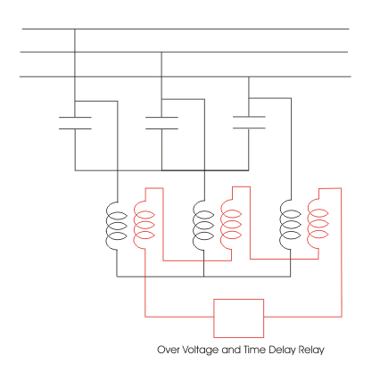
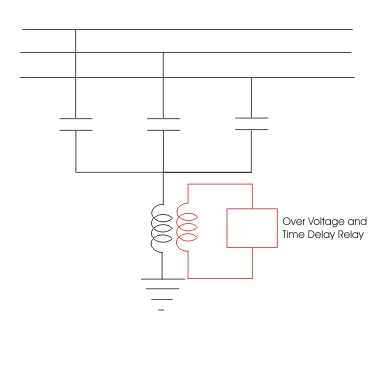
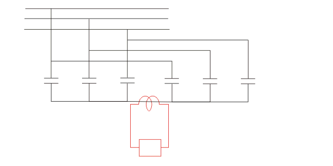
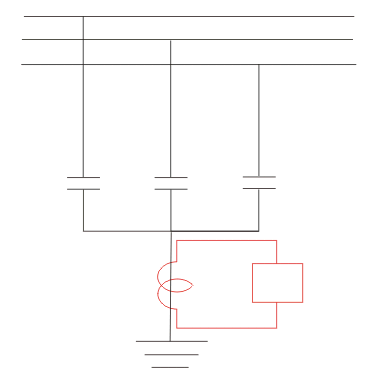

A shunt capacitor is protected both from internally and externally where possible. Since fault may occur in the system as well as in the capacitor units themselves.
Normally all the capacitor units are provided with in-built electrical fuse unit to protect each unit individually. During any internal fault in the unit, it should be automatically disconnected from the rest of the bank. When a capacitor shell is disconnected from the bank, due to fuse failure, there would not be any hamper of normal operation of capacitor bank. Only the capacity of the bank becomes little low.
When a capacitor unit or shell is disconnected the rest of the units in same group will face higher voltage stress. If any further failure of unit, occurs, the voltage stress in remaining shells in the group again rises generally a capacitor unit has only 110% continuous voltage withstand capacity. Hence, over voltage stress of remaining capacitor units, may came easy failure of remaining. That is why it is quite desired to have an automatic capacitor unit failure indication so that, the damaged unit can easily be replaced by good one, for saving other unit from continuous over voltage stress. There are several voltage and electric current sensitive protection scheme of capacitor bank for this purpose.
capacitor bank" width="426" height="426" class="alignright size-full wp-image-11689" />
Here in this scheme of capacitor bank protection, one potential transformer is connected across capacitor group of each phase. The secondary of these three PTs are connected in open delta and a over voltage and time delay relay is connected across the open delta terminals of PTs secondaries. As soon as voltage unbalance occurs between three capacitor groups, resultant voltage appears across the open delta terminals. If this resultant voltage crosses the preset value of the relay, the relay will actuate.

In this scheme of capacitor bank protection, the star point of shunt capacitor bank is earthed through a potential transformer. One over voltage and time delay relay is connected across the secondary of the potential transformer. During balanced condition there would not be any potential difference appears across the PT coil but during unbalance condition, the potential at star point of the bank will no longer remain zero. Hence, there will be a voltage appears across the PT and hence relay will actuate if this voltage crosses preset value of relay.

Here, capacitor units of each phase is divided in two groups. These two groups of same phase are in parallel connected together. The shunt capacitor bank is star connected. A current transformer is connected between common point of each star bank. During balanced condition, the potential of star point of both bank are same, hence there would not be any electric current through the current transformer. But when unbalanced occur in any of the bank, the potential of two ends of the CT will no longer be zero and hence electric current starts flowing through CT depending upon voltage difference between two star points. If the electric current crosses preset value of the relay connected to the CT secondary will actuate.

In this scheme of protection of capacitor bank, the star point of shunt capacitor is solidly grounded through a neutral CT. A over electric current time delay relay is connected with secondary of this neutral current transformer with secondary of this neutral electric current transformer. During unbalancing, electric current will flow through neutral CT and actuate the relay if the electric current crosses the preset value.
These are not all scheme of capacitor bank protection, there may be other protection scheme also available, which do not cover in this page.
 by
by